전파전자통신기능사 (2017-10-14 기출문제)
1과목: 임의 구분
1. 중간주파증폭부의 주파수를 낮게 선정했을 때의 장점이 아닌 것은?
- 근접 주파수 선택도 개선
- 단일 조정 용이
- 감도 및 안정도 향상
- 영상 주파수 선택도 개선
(정답률: 60%)

2. GPS수신기로 정확한 위치정보를 파악하기 위해서는 최소한 몇 개의 GPS 위성으로부터 신호를 수신하여야 하는가?
- 2개
- 6개
- 8개
- 4개
(정답률: 83%)
3. 다음 중 FM 수신기를 구성하는 회로에 속하지 않는 것은?
- 진폭제한기
- 스켈치회로
- 프리엠퍼시스
- 고주파증폭기
(정답률: 69%)
4. 비유전율이 16이고 , 비 투자율이 1인 매질 내를 전파하는 전자파의 속도는 자유공간을 전파할 때의 속도의 몇 배인가?
- 2배
- 4배
- 1/2배
- 1/4배
(정답률: 79%)
5. 중파 주파수대의 파장으로 맞는 것은?
- 100[km] ∼ 50[km]
- 10[km] ∼ 1[km]
- 1[km] ∼ 100[m]
- 10[m] ∼ 1[m]
(정답률: 77%)
6. 주파수 300[MHz] 전파의 파장은 몇 [m]인가?
- 1 [m]
- 5 [m]
- 10 [m]
- 100 [m]
(정답률: 58%)
7. 우리나라에서 전리층, 태양활동 상태 등을 관측하여 우주 전파환경을 예보하는 기관은?
- 중앙 기상청
- 중앙전파관리소
- 대덕전자연구소
- 국립전파연구원
(정답률: 74%)
8. 수직접지 안테나에 대한 설명으로 옳지 않은 것은?
- 기본파에 동조하기 위해서는 λ/4의 길이가 필요하다.
- 높이가 제한된 경우는 길이가 짧아 유도성이 된다.
- 안테나의 동조를 위해 연장코일을 삽입하는 경우도 있다.
- 실효고는 λ/2π가 된다.
(정답률: 83%)
9. 길이가 λ/4인 도선을 수직으로 늘여 한쪽에는 송신기를, 다른 한쪽은 접지하는 방식의 안테나는?
- 수직접지 안테나
- 역 L형 안테나
- 정관형 안테나
- 루프 안테나
(정답률: 81%)
10. 다음 중 지상 마이크로파 통신에 가장 많이 사용되는 안테나는?
- 다이폴 안테나
- 슈퍼턴스타일 안테나
- 휩 안테나
- 파라볼라 안테나
(정답률: 87%)
11. 다음 중 GMDSS와 관련하여 선박에 탑재하는 무선설비에 해당하지 않는 것은?
- LF 무선설비
- MF 무선설비
- MF/HF 무선설비
- HF무선설비
(정답률: 87%)
12. 다음 중 정지궤도 위성은 극지방을 제외하면 최소 몇 개의 위성만 있으면 전 세계 통신이 가능한가?
- 3개
- 1개
- 5개
- 2개
(정답률: 80%)
13. 다음 중 위성 통신 방식에 해당되지 않는 것은?
- 위상 위성
- 헤테로다인 위성 방식
- 랜덤 위성 방식
- 정지 위성 방식
(정답률: 68%)
14. 조난의 중계를 육상에서 조난선박 부근을 항해중인 인근선박에 신속하게 중계하는 EGC 메시지는 INMARSAT의 어디에서 유포하게 되는가?
- OCC
- NCS
- SCC
- CES
(정답률: 76%)
15. 오실로스코프로 측정한 전압의 최대값이 100[V]이라면 회로시험기로 측정할 경우 약 몇 [V]인가?
- 100[V]
- 200[V]
- 70.7[V]
- 141.4[V]
(정답률: 69%)
16. AM 변조에서 신호파의 최대 진폭이 4[V]이고, 반송파의 최대 진폭이 5[V]일 때 변조도는 몇 [%]인가?
- 60[%]
- 80[%]
- 90[%]
- 100[%]
(정답률: 83%)
17. 수신기의 강도 측정에서 무유도 저항이 10[㏀]일 때, 규격 출력이 10[mW]이다, 이보다 20[dB] 낮은 출력을 얻고자 한다면 몇 [V]로 조정하면 좋은가?
- 10[V]
- 0.1[V]
- 1[V]
- 0.01[V]
(정답률: 44%)
18. C급 전력 증폭기의 출력이 100[W], 컬렉터 효율이 70[%], 공진회로의 Q가 무부하시 200, 부하시에 20일 시, 컬렉터 입력전압은 약 얼마인가?
- 70[W]
- 90[W]
- 159[W]
- 143[W]
(정답률: 67%)
19. 반파장 다이폴안테나에서 안테나에 공급되는 전력이 100[W]이고 전파가 최대로 방사되는 방향으로의 거리가 7[m]일 때 전기장의 세기[E]는 얼마가 되는가?
- 1[Ｖ/m]
- 5[Ｖ/m]
- 10[Ｖ/m]
- 15[Ｖ/m]
(정답률: 57%)
20. 반사계수가 0.2일떄, 정재파비는 얼마인가?
- 0.5
- 0.8
- 1.5
- 1.8
(정답률: 50%)
2과목: 임의 구분
21. 다음 문장은 무엇에 관한 설명인가?
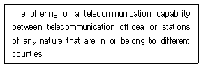
- International telecommunication service
- Broadcasting service
- Mobiles service
- Satellite service
(정답률: 73%)
22. 다음 중 ITU의 공용어가 아닌 것은?
- Russian
- Japanese
- Spanish
- Arabic
(정답률: 89%)
23. “회원국의 정부가 전권위원회에 파견하는 자 또는 기타 컨퍼런스나 회의 시 회원국 정부 또는 주관청을 대표하는 자”의 정의로 적절한 용어는?
- Delegate
- Expert
- Observer
- Agent
(정답률: 72%)
24. what do you call the telecommunication by means of radio waves?(오류 신고가 접수된 문제입니다. 반드시 정답과 해설을 확인하시기 바랍니다.)
- Communication
- Radiocommunication
- Wireless communication
- Multimedia communication
(정답률: 26%)
25. 다음 문장의 문맥상 괄호 안에 알맞은 단어는?
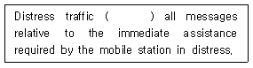
- comprises
- except
- removal
- disregard
(정답률: 61%)
26. 다음 문장의 괄호 안에 들어갈 가장 적당한 것은?
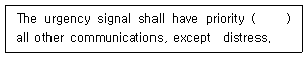
- below
- out
- over
- under
(정답률: 71%)
27. What signal do you send for the safety signal in radiotelephony?”
- We send three repetitions of the word SECURITE.
- We send the group SECURITE repeated two times.
- We send repetitions of SOS.
- We send three repetitions of the group of words PAN PAN.
(정답률: 62%)
28. Choose the correct one for the following blank.
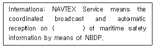
- 5,180[kHz]
- 2,182[kHz]
- 518[kHz]
- 218[kHz]
(정답률: 57%)
29. 무선전화 통화에서 다음 문장을 적합하게 영역한 것은?
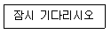
- Stand by
- Verify
- Go ahead
- Roger
(정답률: 92%)
30. 상업용 통신에서 사용되는 다음 각 약어의 뜻을 표시한 것으로서 틀린 것은?
- CIF - cost, insurance and freight
- FOB - free on board
- L/C - land station charge
- B/L - bill of lading
(정답률: 70%)
31. 다음 중 무선통신의 약어의 정의로 틀린 것은? (12.1209)
- CS : Call Sign
- CFM : Confirm
- BQ : A reply to an RQ
- AB: All after
(정답률: 67%)
32. 해상이동업무용 약어에서 “AS”가 의미하는 것은?
- Waiting period
- End of transmission
- A reply to an RQ
- Collate
(정답률: 39%)
33. According to the Radio Regulation, choose the most suitable one in the blank and complete following sentence.
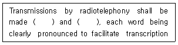
- slowly, distinctly
- fast, distinctly
- exactly, slowly
- moderately, slowly
(정답률: 61%)
34. 다음 문장의 괄호 안에 들어갈 가장 적절한 단어는?
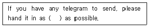
- Clear
- soon
- fine
- long
(정답률: 83%)
35. 다음 중 태평양을 통신권으로 하지 않는 해안지구국명은?
- Beijing
- Santa Paula
- Goonhilly
- Singapore
(정답률: 70%)
36. What does the word "This" mean in the following sentence?
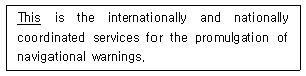
- EGC
- GMDSS
- NAVTEX
- WWNWS
(정답률: 56%)
37. 다음 문장을 영작한 것으로 가징 적합한 것은?
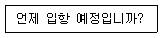
- What is the telegram charge?
- What frequency are you listening to?
- Where is your next port of call?
- When do you expect to enter port?
(정답률: 88%)
38. 다음 문장의 밑줄친 부분의 뜻으로 옳은 것은?
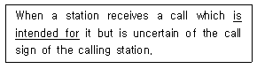
- ∼을 확인하다.
- ∼할 작정이다.
- 시키려고 한다.
- ∼을 뜻한다.
(정답률: 73%)
39. 다음 문장의 밑줄 친 부분과 뜻이 가장 가까운 것은?
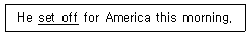
- radio-set
- ordered
- started
- turned on radio
(정답률: 70%)
40. 다음은 GMDSS의 어떠한 기능에 대한 설명인가?
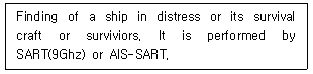
- alerting
- locating
- on-scene communications
- general communications
(정답률: 59%)
3과목: 임의 구분
41. 주어진 발사종별의 전파에 대하여 특정한 조건하에서 사용되는 통신방식에 필요한 전송 속도와 품질로 정보를 전송하는데 충분한 주파수대폭을 무엇이라 하는가?
- 점유주파수대폭
- 스퓨리어스대폭
- 필요주파수대폭
- 특성주파수대폭
(정답률: 81%)
42. 전파를 이용하여 모든 종류의 기호·신호·문언·영상·음향 등의 정보를 보내거나 받는 것을 무엇이라고 하는가?
- 무선설비
- 무선통신
- 무선국
- 무선종사자
(정답률: 84%)
43. 인공적인 유도 없이 공간에 퍼져 나가는 전자파로서 국제전기통신연합이 정한 범위내의 주파수를 무엇이라고 하는가?
- 무선
- 송신설비
- 전파
- 주파수
(정답률: 87%)
44. 전파법에서 정의한 전파의 범위 중에서 국제전기통신연합(ITU)이 정한 주파수 범위는?
- 3,000[KHz] 이하의 전자기파
- 3,000[MHz] 이하의 전자기파
- 3,000[GHz] 이하의 전자기파
- 3,000[THz] 이하의 전자기파
(정답률: 77%)
45. 전파법에서 정의된 “주파수할당”이란 용어의 정확한 뜻은?
- 특정한 주파수의 용도를 정하는 것
- 특정한 주파수를 이용할 수 있는 권리를 특정인에게 주는 것
- 허가나 신고로 개설하는 무선국에서 이용할 특정한 주파수를 지정하는 것
- 안보 외교적 목적 또는 국제적 구가적 행사 등을 위하여 특정한 주파수의 사용을 허가하는 것
(정답률: 58%)
46. 전파이용의 촉진과 전파와 관련된 새로운 기술의 개발과 전파방송기기 산업의 발전 등을 위하여 전파진흥기본계획을 몇 년마다 세워야 하는가?
- 2년
- 3년
- 4년
- 5년
(정답률: 88%)
47. 다음 중 심사에 의한 주파수 할당 시 심사하여야 할 사항이 아닌 것은?
- 신청자의 재정적 능력
- 신청자의 기술적 능력
- 신청자의 사회적 역량
- 전파자원 이용의 효율성
(정답률: 87%)
48. 위성비상위치지시용 무선표지설비(EPIRB)와 수색구조용 레이다 트랜스폰더(SART)의 기술기준에 대한 설명 중 공통점으로 옳은 것은?
- 수심 10m에서 적어도 5분 이상 방수될 것
- 0.75 칸델라(candela)의 섬광등이 부착되어 있을 것
- 구명정에 손상을 줄 우려가 있는 예리한 모서리 등이 없을 것
- 20m 높이에서 물로 떨어뜨렸을 경우에도 손상없이 작동할 수 있을 것
(정답률: 64%)
49. 다음은 선박국에 예비로 설치하는 무선설비의 기능확인에 관한 사항이다. 괄호( ) 안에 들어갈 적당한 말은?
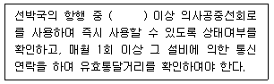
- 매일 1 회
- 매일 2회
- 매주 1회
- 매주 2 회
(정답률: 75%)
50. 다음 중 선박국이 VHF무선설비를 사용하여 해안국을 호출할 경우 사용할 수 없는 것은?
- 호출명칭
- Call sign
- MMSI
- IMO number
(정답률: 67%)
51. 다음 중 선박국 상호간에 사용할 수 있는 MMSI 번호로 올바른 것은?
- 440123001
- 004411001
- 111440120
- 994400120
(정답률: 69%)
52. 다음 중 적합인증 대상기자재가 아닌 것은?
- 전계강도 측정기
- 무선호출국용 무선설비의 기기
- 라디오부이의 기기
- 주파수공용무선전화장치
(정답률: 73%)
53. 다음 중 허가를 받고 운용해야 할 무선국을 허가를 받지 아니하고 개설하거나 운용한 자에 대한 벌칙은?
- 1년 이하의 징역 또는 1천만원 이하의 벌금
- 2년 이하의 징역 또는 2천만원 이하의 벌금
- 3년 이하의 징역 또는 3천만원 이하의 벌금
- 4년 이하의 징역 또는 4천만원 이하의 벌금
(정답률: 63%)
54. 다음 중 국제전기통신연합의 법률 문서가 아닌 것은?
- 국제전기통신연합헌장
- 국제전기통신연합협약
- 업무규칙
- 해상에서의 인명안전협약(SOLAS)
(정답률: 62%)
55. 전권회의의 휴회 기간 동안에 전권회의가 위임한 권한 내에서 전권회의를 대신하여 활동하는 연합의 기구는?
- 이사회
- 사무국
- 전파통신총회
- 전파관리위원회
(정답률: 75%)
56. 국제전기통신연합의 헌장 및 협약에서 규정하는 전기통신에 관한 일반규정이 아닌 것은?
- 유해한 혼신
- 전기통신의 중지
- 업무의 정지
- 관용통신의 우선순위
(정답률: 65%)
57. 국제전기통신연합의 헌장 및 협약 중 전파통신에 관한 특별 규정이 아닌 것은?
- 무선주파수 스펙트럼 및 정지위성 및 기타 위성 궤도의 이용
- 허위의 식별번호
- 전기통신의 비밀
- 국방업무를 위한 설비
(정답률: 58%)
58. 무선통신운용에 있어 가장 기본적인 요소가 되는 통신제원으로 맞는 것은?
- 호출부호, 주파수, 교신시간
- 호출부호, 교신시간, 송신소 위치
- 주파수, 교신시간, 송신출력
- 주파수, 송신출력, 송신소 위치
(정답률: 70%)
59. 다음 통신보안 위규사항 중 국가 행정비밀의 누설에 관한 사항으로 볼 수 없는 것은?
- 대공관계자의 신원조사에 관한 사항
- 대공관련 보고, 신고 및 검문계획에 관한 사항
- 재외 공관에 발하는 훈령 내용에 관한 사항
- 기타 국가 시책에 영향을 초래하는 사항
(정답률: 63%)
60. 통신보안 위규사항 중 불온통신에 해당되지 않는 사항은?
- 북한 통신소와의 교신사항
- 국내 침투 간첩과의 교신사항
- 적성국 통신소와의 교신사항
- 기타 국가 시책에 반대하는 내용의 교신사항
(정답률: 77%)